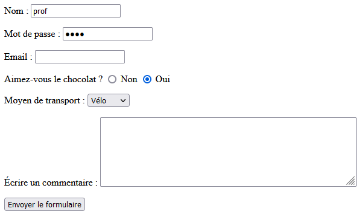

Dans une page Web, un formulaire permet à un utilisateur de renseigner et transmettre des données au serveur, qui peut les utiliser pour :
✍️ Regardez la vidéo suivante de 00:00 à 10:40 (https://youtu.be/FdA1P7dY_18)
Pour intégrer un formulaire dans une page Web, il suffit d’utiliser la balise form dans le fichier HTML.
Un formulaire est constitué :
Voici en vrac, quelques éléments de formulaires :
<form action="" method="">
<p>
<!-- Champ de type "text" -->
<label for="nom">Nom : </label>
<input type="text" name="nom" id="nom">
</p>
<p>
<!-- Champ de type "password" -->
<label for="mdp">Mot de passe : </label>
<input type="password" name="mdp" id="mdp">
</p>
<p>
<!-- Champ de type "email" -->
<label for="email">Email : </label>
<input type="email" name="email" id="email">
</p>
<p>
<!-- Champ de type "radio" -->
Aimez-vous le chocolat ?
<input type="radio" name="choix-chocolat" value="1" id="choix1">
<label for="choix1">Non</label>
<input type="radio" name="choix-chocolat" value="2" id="choix2">
<label for="choix2">Oui</label>
</p>
<p>
<!-- Choix dans une liste d'options avec la balise <select> -->
<label for="moyen-transport">Moyen de transport : </label>
<select name="transport" id="moyen-transport">
<option value="bus">Bus</option>
<option value="voiture">Voiture</option>
<option value="velo">Vélo</option>
<option value="autre">Autre</option>
</select>
</p>
<p>
<!-- Zone de texte plus grande avec la balise <textarea> -->
<label for="commentaire">Écrire un commentaire : </label>
<textarea name="commentaire" id="commentaire" rows="6" cols="50"></textarea>
</p>
<p>
<!-- Bouton d'envoi du formulaire -->
<input type="submit" value="Envoyer le formulaire">
<!-- <button type="submit">Envoyer le formulaire</button> -->
</p>
</form>
Et voici l’affichage à l’écran de ce formulaire dans un navigateur :
Analyse :
On a associé un libellé à chaque élément du formulaire grâce à l’élément <label>. Il constitue une sorte de légende ou description du champ. Cet élément est techniquement rattaché au champ de façon qu’un lecteur d’écran lirait le contenu du libellé lorsque le champ a le focus, et qu’un clic sur le libellé permet de donner le focus au champ associé.
Pour associer un élément <label> avec un élément <input>, il faut fournir un identifiant à l’élément <input> sous la forme d’un attribut id. Ensuite, on peut renseigner l’attribut for de l’élément <label> avec la valeur de cet identifiant.
Remarques :
<input> : https://developer.mozilla.org/fr/docs/Web/HTML/Element/Inputrequired à tous les éléments obligatoires du formulaire. Le formulaire ne pourra pas être envoyé tant que tous les champs obligatoires ne sont pas renseignés. Néanmoins, comme il s’agit d’une vérification (du navigateur) côté client, n’importe qui peut retirer cet attribut : c’est pourquoi une vérification côté serveur est toujours nécessaire.✍️ Regardez la vidéo suivante de 10:40 à 19:00 (https://youtu.be/FdA1P7dY_18?t=640)
Les données d’un formulaire sont transmises au serveur lorsque l’utilisateur clique sur le bouton d’envoi du formulaire. Pour cela, il est nécessaire de définir les deux attributs action et method de l’élément <form>.
action et methodLa valeur de l’attribut action est l’URL où doivent être envoyées les données collectées par le formulaire.
La valeur de l’attribut method définit la méthode HTTP utilisée pour envoyer les données : cela peut être GET ou POST.
Par exemple, si on veut transmettre les données du formulaire à l’URL /ma-page-de-traitement de notre site en utilisant la méthode POST, alors on écrira :
<form action="/ma-page-de-traitement" method="POST">
<!-- tous les éléments du formulaire -->
<form>
GETLa méthode GET transmet les données du formulaire via l’URL, comme nous l’avons vu dans l’activité sur le passage de paramètres via l’URL.
Par exemple, si on complète le formulaire précédent de la façon suivante

alors les données sont transmises dans l’URL comme suit :
/ma-page-de-traitement?nom=prof&mdp=1234&email=&choix-chocolat=2&transport=velo&commentaire=
Dans ce cas, la première ligne (la ligne de commande) d’en-tête de la requête GET est de la forme
GET /ma-page-de-traitement?nom=prof&mdp=1234&email=&choix-chocolat=2&transport=velo&commentaire= HTTP/1.1
et le corps de la requête est vide.
Analyse : Il est important de noter que :
name des éléments du formulaire (nom, mdp, email, choix-chocolat, transport et commentaire)value selon les éléments du formulaireQuand utiliser GET ?
Comme les données sont visibles dans l’URL, cette méthode est adaptée uniquement si les données transmises ne sont pas à caractère confidentiel. De plus, comme nous l’avons déjà dit, les URL ayant une taille maximale, il ne faut pas non plus que les valeurs transmises soient trop longues.
POSTLa méthode POST quant à elle, transmet les données au serveur dans le corps de la requête. Concrètement, cela signifie que les données ne sont pas visibles dans l’URL mais qu’elles sont bien présentes dans le corps de la requête. Ainsi, si on transmet le formulaire précédent avec la méthode POST, la requête envoyée au serveur est de cette forme :
POST /ma-page-de-traitement HTTP/1.1
...
puis toutes les en-têtes
...
[ ligne vide ]
nom=prof&mdp=1234&email=&choix-chocolat=2&transport=velo&commentaire=
⚠️ Cette méthode
POSTne permet pas de transmettre les données de manière chiffrée : n’importe qui interceptant le paquet correspondant à la requête aurait accès aux données transmises. Pour que la transmission soient sécurisée il faut combiner la méthodePOSTavec le protocole sécurisé HTTPS qui dispose d’une couche de chiffrement (comme SSL ou TLS). Dans ce cas, les données sont toujours présentes dans le corps de la requête mais ont été chiffrées et sont donc inexploitables pour quiconque les récupérerait… (ceci est au programme de Terminale).
Quand utiliser POST ?
C’est la méthode à utiliser lorsque les données à transmettre sont à caractère confidentiel (à combiner avec un protocole chiffré !). Les données transmises peuvent avoir un longueur importante car elles sont dans le corps de la requête et ne sont plus soumises à une taille maximale autorisée d’URL.
C’est aussi la méthode à utiliser lorsque la requête entraîne des modifications sur le serveur (par exemple, dans un fichier du serveur ou dans la base de données du site) : une publication sur un blog, un validation d’achat sur un site de commerce, etc. Il faut d’ailleurs faire attention à ne pas actualiser une telle requête, car celle-ci serait envoyée deux fois au serveur, avec le risque de payer deux fois une commande !
Un serveur Web peut récupérer et exploiter les données d’un formulaire. Vous allez voir comment en faisant l’activité suivante :

✍️ Faites l'activité Traitement des données d'un formulaire avec Flask.
<form>. Il existe beaucoup d’éléments de formulaires, chacun ayant un objectif précis et particulier.Références
Germain BECKER & Sébastien POINT, Lycée Emmanuel Mounier, ANGERS